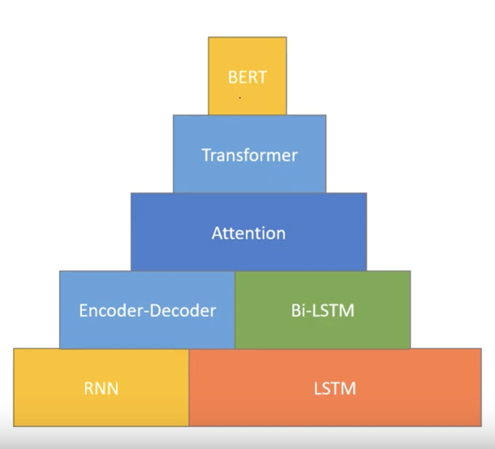

Natural Language Processing
Some notes and useful resources on NLP.
Resources
Books
Foundations of Statistical Natural Language Processing (Manning and Schutze)
Applied Text Analysis with Python (Bengfort, Bilbro and Ojeda)
Natural Language Processing for Social Media (Farzinder and Inkpen)
Code Examples
Natural Language Processing (Kaggle)
Natural Language Processing with Python
NLP: Pre-trained Sentiment Analysis
Text Classification in Python Using Spacy
A Visual Guide to Using BERT for the First Time
BERT Explained: A Complete Guide with Theory and Tutorial
spaCy meets Transformers: Fine-tune BERT, XLNet and GPT-2
Sentiment Analysis of IMDb Movie Reviews Using BERT (from this article)
How to train a new language model from scratch using Transformers and Tokenizers
Courses
Natural Language Processing (Kaggle)
Natural Language Processing in Tensorflow (Coursera)
Sequence Models (Coursera)
SpaCy (Ines Montani)
Mastering SpaCy for Natural Language Processing Examples
Papers
Long Short-term Memory (1997, Hochreiter and Schmidhuber)
A Neural Probabilistic Language Model (2003, Bengio et al)
Empirical Evaluation of Gated Recurrent Neural Networks on Sequence Modeling (2014, Chung et al)
Neural Machine Translation by Jointly Learning to Align and Translate (2014, Bahdanau et al)
Attention Is All You Need (2017, Vaswani et al)
BERT: Pre-training of Deep Bidirectional Transformers for Language Understanding (2018, Devlin et al)
Beto, Bentz, Becas: The Surprising Cross-Lingual Effectiveness of BERT (2019, Wu and Dredze)
SemEval-2019 Task 5: Multilingual Detection of Hate Speech Against Immigrants and Women in Twitter (2019, Basile et al)
A Primer in BERTology: What we know about how BERT works (2020, Rogers et al)
Short Tutorials and Other Articles
The Illustrated BERT, ELMo, and co. (How NLP Cracked Transfer Learning)
Understanding Word Vectors (Allison Parrish)
BERT Word Embeddings Tutorial (May 2019)
BERT Research - Ep. 1 - Key Concepts & Sources (Nov 2019)
The State of Transfer Learning in NLP (Aug 2019)
10 ML & NLP Research Highlights of 2019
Videos/Presentations
Kevin Markham's PyCon2016 Tutorial: Machine Learning with Text in scikit-learn
Modern NLP in Python (PyData DC 2016)
BERT Research Explained (Chris McCormicAI)

BERT Mountain" illustration from
"Chris McCormickAI on YouTube
Use Cases
Text classification e.g. sentiment analysis
Search
Recommendations
Question answering
Sub-Topics
- Text Normalisation: e.g. stemming, lemmatisation
- Shape Analysis
- Tokenisation: e.g. bag of words, n-grams
- Token-level Entity Analysis
- Token Attribute Analysis
- Token Count, Term Frequency-Inverse Document Frequency (TF-IDF)
- Dealing with Stop Words (Generic & Corpus Specific), Punctuation, Case, Incorrect Spelling, Emojis
- Word Vector Embedding, Word2Vec, GLoVE
- Word Vector Visualisation with t-SNE
- Sentence Detection
- Named Entity Recognition
- Part Of Speech (POS) Tagging
- Phrase Modelling
- Topic Modelling and LDA (Latent Dirichlet Allocation)
- Tools: Spacy, Gensim, Scikit-Learn, NLTK, BERT